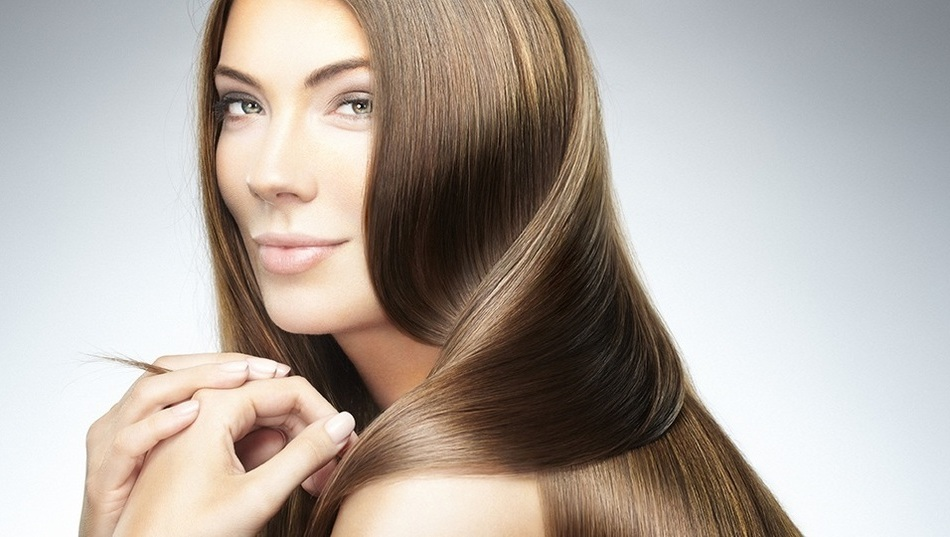

Неизменным достоинством каждой девушки считаются длинные густые волосы.
Они привлекают внимание своим блеском и красотой. Не всех природа наделила щедро таким богатством.
Многие прибегают к услугам парикмахеров и добавляют длину и объем путем наращивания.
Наша студия поможет вам не только приобрести желаемое, но и улучшить то, что есть.